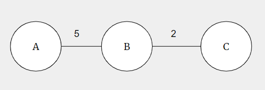
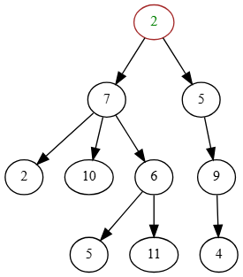
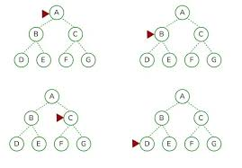

Shell and Git
You just need to know the stuff you’ve been doing all semester!
Basic Shell
- How do you see what directory you’re currently in?
- How do you change your working directory? To a subfolder? To a parent directory?
- How can you see the full content of a file? How can you peek the beginning/ending content?
- How can see all files in your current directory? What flag do you need for hidden files? What flag to show file permissions?
Git
Again, just think the basics
- How to stage changes for commits
- How to commit changes with a message
- How to create/checkout a new branch
- How to push changes to a remote (github) repository
- How to see a list of all commits
If this is no-stress for you, great job! You’ve successfully become really comfortable with git (an in-demand and employable skill)
Cargo
- How do you create a new rust project?
- How do you run a rust project?
- How do you check if a rust project will compile
- How do you run all tests for a cargo project? How do you run certain tests?
- How do you compile the rust binary? How do you do this without debugging safety rails?
Rust: Quick Review and What to Know
Basics
- Ownership model: each value has a single owner; move semantics by default.
- When an item is moved, its heap memory will be deallocated when the variable goes out of scope (Box Deallocation Principle)
- Borrowing: references
&T(immutable) and&mut T(mutable) with lifetimes enforcing safety. - Mutability:
letvslet mut - Types & inference: static typing with strong inference
- Pattern matching:
matchfor control flow and destructuring. Option<T>to handle possibility ofNone, can be propagated with the?operator.- Error handling:
Result<T, E>for recoverable errors,panic!for unrecoverable; prefer?for propagation. enums are used for objects with different variants (ex:Direction::North,Direction::South, andDirection::East)structsare used to group related data, and provide OOP functionality withimpl
Midterm 2 Content
- Memory theory: stack vs heap, where values live, and how ownership controls deallocation.
- Ownership & borrowing rules: who can mutate, who can read, and how lifetimes prevent dangling refs.
- References:
&Tvs&mut T, borrowing rules (one&mutor many&), lifetime annotations conceptually. Vec: dynamic array; push/pop at end O(1) amortized; contiguous memory- Will have a fat pointer with
ptr,len, andcap
- Will have a fat pointer with
- Slice
&[T]points to a contiguous region in memory as a subset of another collection- Fat pointer contains
ptrandlen - Difference between
String,&Stringand&str
- Fat pointer contains
HashMap/HashSet: average O(1) lookup/insert/delete; requireHash+Eqneeded for keysBTreeMap/BTreeSet: ordered maps/sets;BTreeMapis good for ordered unique value iteration and large datasets.
Traits (very brief)
- What they are: interfaces describing shared behavior (
trait Foo { fn bar(&self); }). - Important derivable traits:
Debug,Clone,Copy(small, trivially copyable types),Eq/PartialEq,Ord/PartialOrd,Hash. - When to derive vs implement manually: derive when semantics are straightforward; implement when custom behavior exists.
- Derive with macro
[#derive(T1, T2, T3)]
- Derive with macro
Post-Midterm
- Iterators & closures: iterator adaptors (
map,filter,for_each),forloops vs iterator methods,.collect()to gather results. - Reading algorithm code: you should be able to look at Rust code, and know what algorithm that is / determine it’s time and space complexity
- Writing tests:
#[test]andcargo testbasics; useassert!/assert_eq!and small focused cases.
Data Structures
Be comfortable with the purpose and functionality of each of the following data structures
- Stack
- Queue
- Binary Heap
- Binary Search Trees
- Graphs (covered separately)
For each data structure below you’ll find:
- What it is and when to use it
- Time and space complexity for core operations
- Notable properties and implementation details
- Practical use cases and trade-offs
Stack
What it is
A linear data structure that follows the Last-In-First-Out (LIFO) principle: the most recently added element is the first one removed. Think of a stack of plates — you add and remove from the same end (the top).
Core Operations & Complexity
- Push (insert): O(1) amortized
- Pop (remove): O(1)
- Peek (view top): O(1)
- Space: O(n) where n is the number of elements
Notable Features
-
Stacks are typically implemented as a dynamic array (vector) in most languages, including Rust.
- Elements are stored contiguously in memory.
- Push appends to the end; pop removes from the end.
- Amortized O(1) because the vector occasionally reallocates, but this happens infrequently.
-
Stacks are “just a vec” (or array) because:
- You only ever access/modify one end, so you don’t need fancy data structures.
- The vector’s end pointer and capacity handle the abstraction efficiently.
- No need for linked lists — contiguous memory is faster in practice due to cache locality.
When to Use
- Function call stacks (recursion, system call frames)
- Expression evaluation (infix to postfix conversion)
- Backtracking algorithms (DFS uses an implicit or explicit stack)
- Parenthesis matching and bracket validation
Example Walkthrough
Stack operations: Push 5, Push 3, Push 7, Pop, Peek, Pop
- After Push 5: [5]
- After Push 3: [5, 3]
- After Push 7: [5, 3, 7]
- After Pop: [5, 3], returned 7
- After Peek: [5, 3], return 3 (no change)
- After Pop: [5], returned 3
In rust, all peek and pop operations return
Option<T>, to account for the possibility of an empty stack (same goes for Queues)
Queue
What it is
A linear data structure that follows the First-In-First-Out (FIFO) principle: elements are inserted at the back and removed from the front, like a line at a store.
Core Operations & Complexity
- Enqueue (insert back): O(1) amortized
- Dequeue (remove front): O(1) amortized
- Peek (view front): O(1)
- Space: O(n) where n is the number of elements
Notable Features
-
Why it isn’t just a vec:
- If you use a simple dynamic array, dequeuing from the front is O(n) because you’d need to shift all remaining elements forward.
- A standard vector only provides efficient removal from the end.
-
Circular Buffer / VecDeque (Rust’s efficient queue):
- Uses a circular buffer: a fixed-size array where the “front” and “back” pointers wrap around.
- Both enqueue and dequeue operate at pointers without shifting, achieving O(1) amortized.
- When the circular buffer is full, it reallocates (like a vector) to a larger size.
- Memory usage is linear O(n), but the buffer may have some wasted capacity between reallocations.
-
Why not a linked list?
- Linked lists waste memory on pointers (worse cache locality).
- Circular buffers are more cache-friendly and faster in practice, even with potential reallocations.
- Rust’s
VecDequeuses a circular buffer for this reason.
You can either use
push_backandpop_frontORpush_frontandpop_back, but NOTpush_frontandpop_frontto implement a Queue. Why?
When to Use
- BFS traversal (visit nodes level-by-level)
- Task scheduling (jobs queued for processing)
- Print job management
Example Walkthrough
Queue operations: Enqueue 10, Enqueue 20, Enqueue 30, Dequeue, Peek, Dequeue
- After Enqueue 10: [10]
- After Enqueue 20: [10, 20]
- After Enqueue 30: [10, 20, 30]
- After Dequeue: [20, 30], returned 10
- After Peek: [20, 30], return 20 (no change)
- After Dequeue: [30], returned 20
Binary Heap
What it is
A complete binary tree (all levels filled except possibly the last, which is filled left-to-right) that satisfies the heap property:
- Min-Heap: parent ≤ children
- Max-Heap: parent ≥ children
Used as an efficient priority queue data structure.
Tree Representation
Conceptually, a binary heap is visualized as a tree:
Min-Heap Example:
1
/ \
3 5
/ \ /
7 6 8
Array Representation
Heaps are stored in an array for efficiency:
- Root at index 0
- For node at index i:
- Left child at index 2i + 1
- Right child at index 2i + 2
- Parent at index ⌊(i−1)/2⌋
Same heap as above in array form: [1, 3, 5, 7, 6, 8]
Core Operations & Complexity
- Insert: O(log n)
- Delete (extract min/max): O(log n)
- Peek (view min/max): O(1)
- Space: O(n)
Insert Procedure (Sift-Up / Bubble-Up)
- Add the new element to the end of the array (next available leaf position).
- Sift up: Compare with parent; if violates heap property, swap with parent.
- Continue up the tree until the heap property is restored or you reach the root.
Example (min-heap): Insert 2 into [1, 3, 5, 7, 6, 8]
- Add 2 at end:
[1, 3, 5, 7, 6, 8, 2] - 2’s parent (index 2) is 5; 2 < 5, so swap:
[1, 3, 2, 7, 6, 8, 5] - 2’s parent (index 1) is 3; 2 < 3, so swap:
[1, 2, 3, 7, 6, 8, 5] - 2’s parent (index 0) is 1; 2 > 1, so stop.
- Result:
[1, 2, 3, 7, 6, 8, 5]. Heap property maintained.
Remove (Extract Min/Max) Procedure (Sift-Down / Bubble-Down)
- Extract the root (min or max).
- Move the last element to the root position.
- Sift down: Compare the root with its children; if it violates the heap property, swap with the smaller (min-heap) or larger (max-heap) child.
- Continue down until the heap property is restored or you reach a leaf.
Example (min-heap): Remove min from [1, 2, 3, 7, 6, 8, 5]
- Extract 1; move last element (5) to root:
[5, 2, 3, 7, 6, 8] - 5’s children are 2 and 3; min is 2; 5 > 2, so swap:
[2, 5, 3, 7, 6, 8] - 5’s children are 7 and 6; min is 6; 5 < 6, so stop.
- Result:
[2, 5, 3, 7, 6, 8]. Heap property maintained.
When to Use
- Priority queues (e.g., Dijkstra’s algorithm, Huffman coding)
- Heap sort (in-place sorting algorithm)
- Finding the k smallest/largest elements
- Scheduling and load balancing
- Median finding in a stream
Notable Properties
- Efficient for repeated access to the minimum (or maximum) element.
- Not suitable for arbitrary element lookup or deletion (beyond the root).
- Both insert and remove are O(log n), making heaps very efficient for dynamic min/max queries.
Binary Search Tree (BST)
What it is
A binary tree where each node has at most two children and satisfies the BST property:
- All values in the left subtree are less than the node’s value.
- All values in the right subtree are greater than the node’s value.
This ordering enables efficient searching and insertion.
Core Operations & Complexity
-
Search:
- Best/Average: O(log n) (balanced tree)
- Worst: O(n) (degenerate/linear tree if not balanced)
-
Insert:
- Best/Average: O(log n)
- Worst: O(n) (if tree becomes unbalanced)
-
Delete:
- Best/Average: O(log n)
- Worst: O(n)
-
In-order traversal: O(n) (yields elements in sorted order)
-
Space: O(n)
Notable Features
- Ordered traversal: In-order DFS on a BST yields elements in sorted order.
- Balancing problem: A naive BST can degrade into a linked list if insertions are in sorted order (e.g., 1, 2, 3, 4, 5).
- Solution: Self-balancing BSTs (AVL, Red-Black trees) maintain O(log n) height through rotations.
- Rust’s standard library uses red-black trees for
BTreeMapandBTreeSet.
Search Procedure
- Start at root.
- Compare target with current node:
- If equal, found it.
- If target < current, go left.
- If target > current, go right.
- Continue until found or reach a null pointer (not found).
Example: Search for 6 in BST with root 4, left child 2, right child 6
- Compare 6 with 4: 6 > 4, go right.
- Found 6.
When to Use
- Dictionaries and maps (though hash tables are often faster for lookup alone).
- Sorted data structures (maintaining sorted order with dynamic insertions/deletions).
- Range queries (find all elements between a and b).
- Building decision trees.
- Self-balancing variants (AVL, Red-Black) are used in databases and filesystems.
Balanced vs. Unbalanced
- Balanced BST: height ≈ log n — all operations are O(log n).
- Unbalanced BST: height up to n — degenerates to a linked list if not managed.
- Self-balancing: Red-Black trees and AVL trees automatically rebalance on insertion/deletion through rotations, guaranteeing O(log n) operations.
BTreeMap / BTreeSet (brief)
What they are
BTreeMap and BTreeSet are ordered map/set implementations based on a B-tree (a balanced, multi-way search tree). Unlike binary trees, B-trees keep multiple keys per node and keep the tree shallow by allowing many children per node.
Complexity and when to use
- Search/Insert/Delete: O(log n) (log base depends on node fanout)
- Space: O(n) with extra per-node overhead for storing multiple keys
- Use
BTreeMap/BTreeSetwhen you need an ordered map/set with good locality and predictable O(log n) performance. For example, you can have a HashMap with sorted keys (alphabetical order)!
Practical notes
- Iteration over a
BTreeMaporBTreeSetyields elements in sorted order without additional work. - B-trees are especially useful when nodes are sized to match cache lines or disk pages (reducing pointer chasing). You’ll learn more about this in 310!
Summary Table
| Data Structure | Insert | Remove | Search | Use Case |
|---|---|---|---|---|
| Stack | O(1) | O(1) | O(n) | LIFO, recursion, undo |
| Queue | O(1) | O(1) | O(n) | FIFO, BFS, task scheduling |
| Binary Heap | O(log n) | O(log n) | O(n) | Priority queues, heapsort |
| BST (balanced) | O(log n) | O(log n) | O(log n) | Sorted maps, range queries |
| BST (unbalanced) | O(n) | O(n) | O(n) | Bad — avoid in practice |
Graphs
Graphs are a non-linear data structure that represent relationships between objects using nodes (or vertices) and edges (or links)
Types of Graphs (Vocab)
Directed Graph:

Undirected Graph:

Weighted Graph
Definition: Any graph where each edge is assigned a numerical value, or “weight,” which can represent a cost, distance, or other metric
Can be Directed (With Potentially Different Weights for Different Directions)

Or Undirected

Unweighted Graphs
A graph without weights is literally just the graphs we saw before, don’t overthink it!
Cyclic Graph: Any graph that has a cycle
Cycles may be long:

Or as short as two elements.
Acyclic Graph: Any graph that doesn’t have a cycle
Directed Acyclic Graph (DAG): Any directed graph that doesn’t have a cycle
Note: These are all overlapping definitions. A DAG is an acyclic Graph, and is a Directed Graph, and may be weighted or unweighted
Trees (as graphs)

💡 What vocab words can we use to describe a tree?
Graph
List of edges: INVALID
Maintain a list of each edge (u, v) in a graph. This is enough to cover MOST information but not ALL. If a node is not connected to any other nodes, it would be dropped from our representation.
List of notes: INVALID
Maintain a list of each node V in the graph. This just doesn’t give any information to encode edge relationships, so this also isn’t enough
Adjacency List
An adjacency list represents a graph as a mapping from each vertex to a list (or set) of its neighbors. It’s typically implemented with a dictionary (or hash map) keyed by node IDs pointing to arrays/lists of adjacent nodes. For weighted graphs, store pairs (neighbor, weight).
Example Directed Graph (Python, string node ids):
graph = {
'A': [('B', 5), ('C', 2)],
'B': [('A', 5), ('D', 1)],
'C': [('A', 2)],
'D': [('B', 1)],
}
Example Unweighted Graph (Python):
graph = {
'A': ['B', 'C'],
'B': ['A', 'D'],
'C': ['A'],
'D': ['B']
}
Note: Undirected graphs are just stored as directed graphs, and whenever you add edge
u, vto the adjacency list, also add edgev, u.
- Strengths: memory-efficient for sparse graphs (O(V + E)), fast to iterate over neighbors, natural for DFS/BFS and most graph algorithms (Dijkstra, topological sort).
- Weaknesses: checking if an edge (u, v) exists may be O(deg(u)); not ideal for extremely dense graphs where adjacency queries need to be constant time.
- When to use: real-world networks (social/follow graphs), road networks, algorithm implementations where iterating neighbors is common.
Adjacency Matrix
An adjacency matrix is a 2D array (matrix) of size V x V where matrix[u][v] indicates the presence (and optionally weight) of an edge between u and v. Node IDs are typically mapped to integer indices.
Example (Python, unweighted):
n = 4
matrix = [[0]*n for _ in range(n)]
# add directed edge 0 -> 1
matrix[0][1] = 1
# add weighted edge 1 -> 2 with weight 7
matrix[1][2] = 7
- Strengths: O(1) time to check if an edge exists, simple linear algebra operations (matrix powers give counts of paths), compact for dense graphs.
- Weaknesses: uses O(V^2) memory which is prohibitive for large sparse graphs; iterating neighbors is O(V) rather than O(deg(v)).
- When to use: small graphs, dense graphs, algorithms that rely on matrix operations (e.g., some network analysis tasks), or when constant-time edge queries are required.
Algorithms
Algorithms to Know
- BFS
- DFS
- Dijkstra’s
- Kruskal’s MST
- Prim’s MST
- Topological Sort
- Selection Sort
- Quick Sort
- Merge Sort
For each algorithm below you’ll find:
- What it does and when to use it
- Time and space complexity
- Concrete step-by-step walkthrough (small example)
- Core data structures it uses
1) Breadth-First Search (BFS)
a. What it does / when to use it
- Explores a graph level-by-level from a start node.
- Use BFS to find the shortest path in an unweighted graph, to check connectivity, or to compute levels (distance in number of edges) from a source.
b. Complexity
- Time: O(V + E)
- Space: O(V) (queue + visited set)
c. Specific steps (walkthrough)
- Start at node A. Mark A visited and enqueue it.
- Steps:
- While queue not empty:
- dequeue node u
- visit its neighbors v that are not visited: mark visited, record path, and enqueue v.

d. Data structures
- Queue (FIFO), visited set/map, optional hashmap for reconstructing paths.
2) Depth-First Search (DFS)
a. What it does / when to use it
- Explores as deep as possible along each branch before backtracking. Use DFS for cycle detection, topological sorting (when implemented with postorder), connected components, and exploring search spaces where you want to explore paths completely.
b. Complexity
- Time: O(V + E)
- Space: O(V) (recursion stack or explicit stack + visited)
c. Specific steps (walkthrough)
Recursive approach: visit node, mark visited, recursively visit each unvisited neighbor.

d. Data structures
- Recursion stack or explicit stack, visited set/map.
Notes: DFS does not guarantee shortest paths in terms of edge count.
3) Dijkstra’s Algorithm
a. What it does / when to use it
- Finds shortest paths from a single source to all nodes in a graph with non-negative edge weights. Use Dijkstra for weighted shortest-path problems where weights are >= 0.
b. Complexity
- Using a binary heap (priority queue): O((V + E) log V) typically written O(E log V)
- Space: O(V) for distances and predecessor information
c. Specific steps (walkthrough)
- Initialize
distance[source]=0, all others = ∞. Use a min-priority queue keyed by distance. - Simple Explanation: Greedily take smallest tenative distance, update if we find shorter paths.
- Extract node u with smallest tentative distance; for each neighbor v of u relax the edge: if
dist[u] + w(u,v) < dist[v], updatedist[v]and predecessor, and push/updatevin the queue.
Helpful Video (Can skip to 0:20)
d. Data structures
- Min-priority queue (binary heap), distance vector/map, predecessor map, adjacency list for neighbors.
Restrictions: edges must have non-negative weights
4) Kruskal’s Minimum Spanning Tree (MST)
Recall that a Minimum Spanning Tree (MST) is the cheapest way (lowest total edge weight) to connect all nodes (vertices) in a weighted, connected graph without creating any cycles

a. What it does / when to use it
- Computes an MST for a connected, undirected, weighted graph by greedily selecting the smallest-weight edges that do not form a cycle.
b. Complexity
- Time: O(E log E) for sorting edges
- Space: O(V) for union-find structures and output MST edges
c. Specific steps (walkthrough)
- Sort all edges ascending by weight.
- Initialize a disjoint-set (union-find) with each vertex in its own set.
- Have some function
find(N)that returns which tree a nodeNis in. - Iterate sorted edges: for edge
(u,v,w), iffind(u) != find(v)thenunion(u,v)and include edge in MST. - Continue until MST has
V-1edges.
d. Data structures
- Edge list (sorted), Union-Find (disjoint-set) data structure with path compression and union by rank.
5) Prim’s Minimum Spanning Tree (MST)
a. What it does / when to use it
- Grows an MST from a starting vertex by repeatedly adding the cheapest edge connecting the growing tree to a new vertex. Can be more efficient for dense graphs.
b. Complexity
- Time Complexity using a binary heap + adjacency list: O(E log V)
- Space: O(V)
c. Specific steps (walkthrough)
- Pick arbitrary start vertex; mark it in the MST set.
- Maintain a min-priority queue of candidate edges keyed by edge weight.
- Repeatedly extract the smallest edge that connects the tree to a new vertex, add that vertex and update candidate edges for its neighbors.
d. Data structures
- Priority queue (min-heap), adjacency list or matrix, vectors to track best edge/weights and whether a vertex is in the MST.
NOTE: You only need to master (know specific steps) of 1 of the MST algorithms, but you should know the names, data structures, and time/space complexity of each
6) Topological Sort
a. What it does / when to use it
- Produces a linear ordering of nodes in a directed acyclic graph (DAG) such that for every directed edge
(u, v),uappears beforev. Use it for scheduling tasks with prerequisites, build systems, and course ordering.
b. Complexity
- Time: O(V + E)
- Space: O(V)
c. Specific steps (walkthrough)
- Perform a Depth First Search (DFS) on the Directed Acyclic Graph (DAG) and
- for each vertex:
- push it onto a stack only after visiting all its adjacent vertices. This ensures that every vertex appears after all its neighboring vertices.
- Finally, reversing the stack (or popping elements from it) gives the topological ordering of the graph.
d. Data structures
- In-degree vector/map, stack, adjacency list.
Helpful Video, Can Skip to 1:05
7) Selection Sort
a. What it does / when to use it
- Simple comparison-based sorting algorithm that repeatedly selects the minimum (or maximum) element from the unsorted portion and moves it to the end of the sorted portion. Use primarily for teaching or tiny vectors where simplicity matters; not used in production for large n.
b. Complexity
- Time: O(n^2) comparisons and O(n) swaps
- Space: O(1) extra space (in-place)
c. Specific steps (walkthrough)
- For i from 0 to n-2: find index minIndex of smallest element in A[i..n-1], swap A[i] and A[minIndex].
- Example: A=[4,2,7,1]
- i=0: min=1 at index 3 -> swap -> [1,2,7,4]
- i=1: min=2 at index 1 -> swap (no-op) -> [1,2,7,4]
- i=2: min=4 at index 3 -> swap -> [1,2,4,7]
d. Data structures
- vector; uses indices and constant extra variables.
8) Quick Sort
a. What it does / when to use it
- Divide-and-conquer sorting algorithm that partitions an vector around a pivot, recursively sorts partitions. Use Quick Sort for average-case fast in-memory sorting; it’s often the fastest practical comparison sort.
b. Complexity
- Average time: O(n log n)
- Worst-case time: O(n^2) (bad pivot choices)
- Space: O(log n) expected recursion depth (in-place partitioning); O(n) worst-case recursion depth.
c. Specific steps (walkthrough)
- Choose a pivot (first, last, random, median-of-three). Partition vector into elements < pivot, pivot, and > pivot (in-place schemes like Lomuto/Hoare). Recursively sort the two partitions.
- Example: A=[3,6,2,7,5], choose pivot 5
- partition -> [3,2,5,6,7] (positions left of pivot <5, right >5)
- recurse on [3,2] and [6,7] etc.
d. Data structures
- vector in-place, recursion stack. Partitioning uses index pointers.
Notes: Randomized pivot or median-of-three reduces the chance of worst-case; quicksort is not stable unless implemented carefully.
9) Merge Sort
a. What it does / when to use it
- Divide-and-conquer sorting algorithm that splits the vector in half, recursively sorts each half, and merges the sorted halves. Use when stable sort is required or predictable O(n log n) worst-case performance is important; good for external sorting and linked lists.
b. Complexity
- Time: O(n log n) worst/average/best
- Space: O(n) extra space for vectors (merge buffers).
c. Specific steps (walkthrough)
- Recursively split the vector until subvectors of size 1. Merge pairs of sorted subvectors by repeatedly taking the smaller head element and writing it to the output vector.
- Example: A=[4,1,3,2]
- split [4,1] and [3,2]
- split further to [4],[1] and [3],[2]
- merge [4] and [1] -> [1,4]; merge [3] and [2] -> [2,3]
- merge [1,4] and [2,3] -> [1,2,3,4]
d. Data structures
- vectors, temporary buffer/vector for merging, recursion stack.
Notes: Merge sort is stable and has reliable performance; useful when worst-case guarantees or stability are needed.
Fair-Game / Conceptual Questions (examples)
- Given a graph and asked for the shortest path in an unweighted graph from A to E, use BFS and reconstruct the path.
- Order classes to satisfy prerequisites use Topological Sort on the prerequisite DAG.
- What is the time and space complexity of Prim’s MST
- True/False: Kruskal’s MST uses a Binary Heap
Not Fair-Game
- Writing code is intentionally excluded from the conceptual questions — focus on the algorithmic steps, trade-offs, and when to pick each approach.
Example Problems

Algorithm-focused example
Given the directed, weighted graph below, perform the following (no code required - show steps and reasoning):
- Draw the graph
- Run Dijkstra’s algorithm from node
Aand show the tentative distance table after each extraction from the priority queue. Indicate the final shortest-path. - Using the final predecessor pointers, write the shortest path and total cost from
AtoE. - Explain why Dijkstra is valid here (mention weight constraints) and what could break if negative edges were present.
Graph (weights), draw the graph and then run Dijkstra’s:
- A -> B (4), A -> C (1)
- C -> B (2), B -> D (5)
- C -> D (8), D -> E (2)
- B -> E (10)